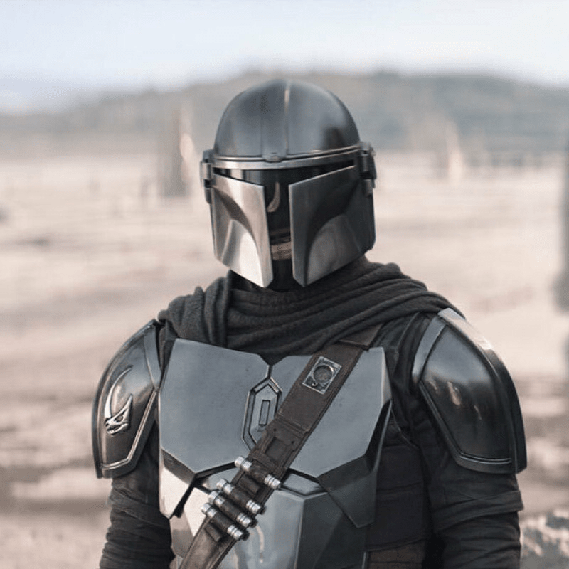
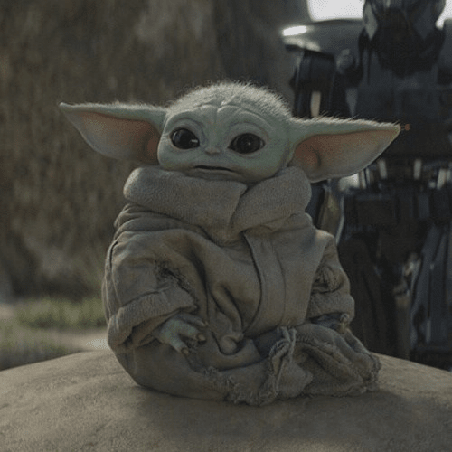
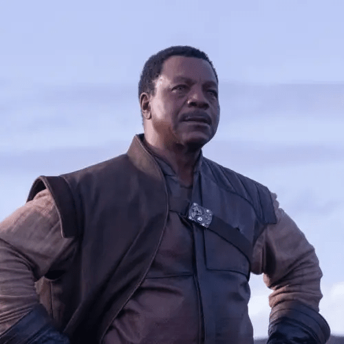
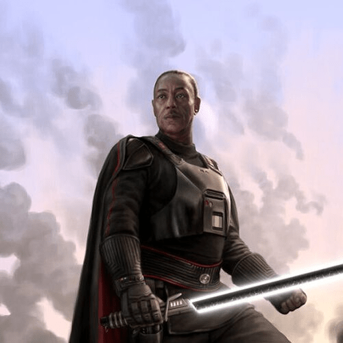

The Mandalorian
The Mandalorians, a proud and resilient warrior culture in the expansive Star Wars universe, have a rich and
storied history that spans millennia. Hailing from the outer rim world of Mandalore, these people are defined by
their distinct code of honor, fierce combat skills, and iconic armor.
The origins of the Mandalorian people are shrouded in mystery, with conflicting accounts and legends passed down
through generations. Some believe they descended from ancient Taung warriors, while others suggest a more
diverse origin involving various species and groups coming together in the harsh environment of Mandalore.
Central to Mandalorian identity is the Resol'nare, a set of six tenets that guide their way of life. These
principles include wearing armor, speaking the Mandalorian language (Mando'a), defending oneself and family,
contributing to the clan's welfare, raising children as Mandalorians, and, finally, going into battle as a last
resort. These principles forge a strong sense of unity among the Mandalorian people.
Mandalorians are renowned for their exceptional combat skills and mastery of various weapons. Their iconic
armor, made from the nearly indestructible material beskar, is both a symbol of their identity and a practical
means of protection. Each set of armor is unique, reflecting the individual Mandalorian's personality and
experiences.
Throughout galactic history, the Mandalorians have played a significant role in conflicts, often serving as
elite mercenaries or warriors for hire. The Mandalorian-Jedi Wars, a series of conflicts between the Mandalorian
people and the Jedi Order, are notable chapters in their history. These wars were marked by fierce battles and
showcased the Mandalorians' resilience and adaptability.
The Mandalorians faced a devastating event known as "The Great Purge," where the Empire sought to acquire the
precious beskar metal, resulting in the near-extinction of the Mandalorian people. This event had a profound
impact on their culture and led to the adoption of the "Way of the Mandalore," emphasizing the importance of
foundling children and rebuilding their society.
One iconic figure in Mandalorian lore is Din Djarin, the titular character in the Disney+ series "The
Mandalorian." His journey explores the complexities of Mandalorian identity, the bonds of found family, and the
struggle for survival in a galaxy plagued by conflict.
As the Star Wars saga continues to unfold, the Mandalorians remain a fascinating and integral part of the
galaxy's diverse tapestry, their history and traditions continuing to capture the imagination of fans across the
galaxy.
Mandalorian Characters

Din Djarin

Din Grogu
Bo-Katan Kryze

Greef Karga

Moff Gideon